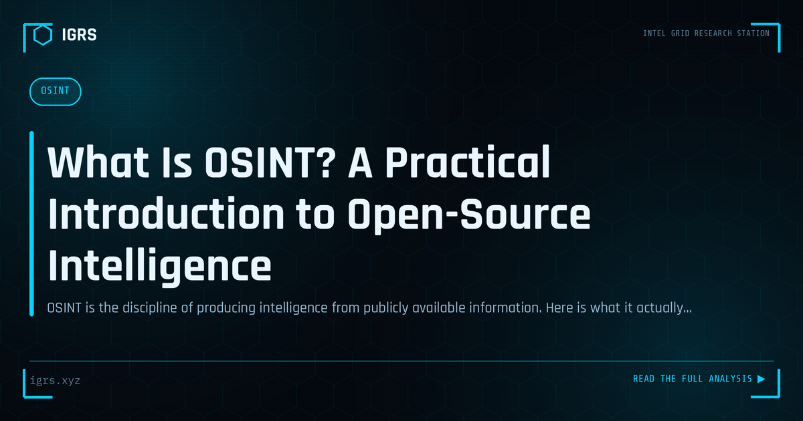

What Is OSINT? A Practical Introduction to Open-Source Intelligence
| File No. | OD-001/2026 |
| Subject | Definition, intelligence cycle, legal boundaries and real-world applications of OSINT |
| Category | OSINT Fundamentals |
| Author | Manuj Kumar Pandey |
| Published | 2026-04-06 |
| Reading time | 12 minutes |
OSINT is the discipline of producing intelligence from publicly available information. Here is what it actually involves, who uses it, and where the legal lines are.
What Is OSINT? The Foundation of Modern Investigation
Open Source Intelligence (OSINT) is intelligence gathered from publicly available sources — websites, social media, public records, news, and more. It has become a cornerstone of cyber investigation, security research, journalism, due diligence, and law enforcement. Unlike intelligence requiring covert access, OSINT draws entirely on information anyone can legally access. This guide explains what OSINT is, how it works, and its applications.
Defining OSINT
OSINT is the collection and analysis of information from open, publicly available sources to produce actionable intelligence. The key word is "open" — the information is accessible to anyone, without hacking, special clearance, or covert methods. What transforms open data into intelligence is the systematic collection, correlation, and analysis that reveals insights not obvious from any single source.
Sources of OSINT
| Category | Examples |
|---|---|
| Social media | Facebook, Instagram, Twitter/X, LinkedIn |
| Public records | Company filings, court records, property records |
| Web content | Websites, blogs, forums, archives |
| Technical data | WHOIS, DNS, certificates, breach data |
| Media | News, images, videos |
| Geospatial | Maps, satellite imagery, geotags |
The OSINT Process
Effective OSINT follows a structured process: defining the intelligence requirement (what question are we answering), identifying relevant sources, collecting information systematically, correlating data across sources, analysing to derive insight, and documenting findings. This discipline distinguishes professional OSINT from random searching — it ensures thoroughness, repeatability, and defensibility.
Common OSINT Use Cases
OSINT serves a remarkable range of purposes:
- Cyber investigations — tracing fraudsters, attackers, and threats
- Due diligence — verifying individuals and companies
- Threat intelligence — understanding adversaries
- Journalism — verification and investigation
- Law enforcement — supporting criminal investigations
- Locating people — finding individuals from digital traces
OSINT Techniques
Core OSINT techniques include search engine dorking (advanced search operators), reverse image search (finding image sources and matches), username and email pivoting (tracking identities across platforms), metadata analysis (extracting hidden data from files), social media analysis, and geolocation (determining where images or events occurred). Mastery comes from combining these techniques fluidly to follow a trail of evidence.
Essential OSINT Tools
| Tool | Purpose |
|---|---|
| Google dorking | Targeted search |
| Reverse image search | Image verification (Google, Yandex, TinEye) |
| Sherlock/WhatsMyName | Username hunting |
| Have I Been Pwned | Breach checking |
| Maltego | Link analysis and visualisation |
| Wayback Machine | Historical web content |
Is OSINT Legal?
OSINT using genuinely public information is legal. The legal line is crossed when one accesses private systems without authority, uses deception that breaches law, or violates data protection regulations like the DPDP Act 2026. In India, OSINT must respect the IT Act and data protection obligations — gathering public information is permissible, but the manner of collection and the handling of personal data must remain lawful. Professional OSINT is conducted within clear legal and ethical boundaries.
OSINT in the Indian Context
India offers a particularly rich OSINT environment due to extensive digitisation of public records — MCA21 for companies, GST portals, eCourts for litigation, and more. Combined with the prevalence of social media use, this makes India-focused OSINT highly productive. Indian investigators benefit from government transparency portals that provide free access to data costing significant sums elsewhere.
The Ethics of OSINT
Beyond legality, OSINT carries ethical responsibilities. The same techniques that serve investigation can enable stalking or harassment. Responsible practitioners use OSINT for legitimate purposes, respect privacy where information was not intended to be public, handle personal data carefully, and consider the impact of their work. Ethical OSINT is not only the right approach but produces more defensible, professional results.
Building OSINT Skills
Developing OSINT capability requires learning the techniques, practising on real scenarios (starting with investigating yourself), building a methodical workflow, staying current with evolving tools and platforms, and understanding the legal and ethical framework. OSINT is a skill that rewards curiosity, persistence, and disciplined thinking. For anyone in cybersecurity, investigation, or research, it is among the most versatile and valuable capabilities to master — turning the vast ocean of public information into focused, actionable intelligence.